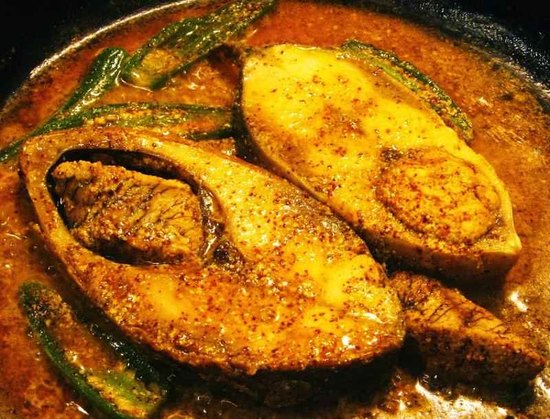

SORSHE ILISH

Description:
Sorshe ilish is a traditional recipe of our Bengali cuisine where ilish mach or hilsa fish is cooked with a shorshe bata or mustard paste gravy. Shorshe ilish is an authentic Bengali hilsa fish curry which is generally relished by Bengalis from India and Bangladesh.
Ingredients:
- 750 gm. Hilsa fish (cut into 6-7 pieces)
- 1/2 teaspoon turmeric powder
- 1/2 tablespoon black mustard seeds
- 1 tablespoon yellow mustard seeds
- 4 large green chillies
- 100 ml. mustard oil + a few drops to finish
- 1/2 teaspoon nigella seeds
- Salt to taste
Steps:
- Soak the mustard seeds in warm water for at least 1 hour, preferably.
- Strain and make a paste with 1/4th teaspoon salt and 1 large green chilli. The paste should not be runny, so its ideal to use a sil or mortar or pestle to make this paste.
- Apply salt and turmeric powder on hilsa fish. Set aside.
- Reserve 2 tablespoon of the mustard oil. Heat the remaining oil. Fry the hilsa on both sides over medium high heat till light golden (about 30-35 seconds per side). Remove and put them aside.
- To the remaining mustard oil, add 1 tablespoon of the fried hilsa oil, and heat it over high heat till the oil is really hot but not smoking. Add the nigella seeds, lower the heat to a simmer, and immediately add the mustard paste and 1/4th teaspoon turmeric, followed by 1 cup water.
- Once the water starts boiling, add the fish and green chillies. You can slit a couple of them to add to the heat. Then, add salt to taste. Stir everything up, cover and cook over simmering heat for 8-10 minutes. Add a few drops of raw mustard oil, then cover and turn off the heat.
- Let it cook in its own steam for another 5 minutes, then serve with hot rice.
Go to top of this Page
Go to Home Page